Pendahuluan & Prasyarat
Selamat datang di dokumentasi resmi plugin Herbal Core v1.2.1. Plugin ini dirancang eksklusif untuk Taman Wisata Herbal Insani untuk mengelola seluruh front-end website secara instan dan terkontrol melalui Shortcode.
Kami menyarankan penggunaan tema Hello Elementor yang ringan. Anda bebas menggunakan tema apa saja. Namun, jika ada desain yang bertabrakan dengan bawaan tema Anda, silakan sesuaikan melalui menu Tampilan > Sesuaikan > CSS Tambahan.
Prasyarat Plugin
Pastikan plugin gratis berikut sudah terinstall di WordPress Anda sebelum mulai:
- Elementor Website Builder (Wajib, untuk mengatur struktur halaman menggunakan template Canvas).
- Ultimate Addons for Elementor (Opsional, sangat disarankan jika ingin melakukan custom Header/Footer bawaan tema. Plugin ini buatan *Brainstorm Force*).
Instalasi Plugin & Setup
- Buka menu Plugin > Tambah Baru > Unggah Plugin.
- Pilih file
herbal-core-v1.2.1.ziplalu klik Instal Sekarang. - Klik Aktifkan Plugin.
- Buka menu Pengaturan > Permalink (Tautan Permanen). Pastikan tersetting ke Nama Tulisan (Post name). Klik Simpan Perubahan.
Cara Membuat Halaman Front-End
Sistem ini tidak menggunakan Elementor Builder secara manual. Anda cukup membuat halaman dan memasukkan shortcode.
- Pilih menu Laman > Tambah Baru.
- Beri judul halaman, misalnya "Beranda".
- Mengatur Template Halaman: Anda wajib menggunakan template Elementor Canvas agar tema bawaan tidak merusak desain. Ada dua cara mengaturnya:
- Cara 1 (Gutenberg): Pada panel sebelah kanan (tab Laman), cari bagian Template lalu pilih Elementor Canvas. (Catatan: Terkadang pilihan ini disembunyikan oleh tema aktif).
- Cara 2 (Elementor): Jika cara pertama gagal, klik tombol biru atas Sunting dengan Elementor. Di panel kiri bawah Elementor, klik ikon Pengaturan (Roda Gigi), pada opsi Page Layout pilih Elementor Canvas.
- Ketik shortcode yang sesuai di area editor teks (atau gunakan widget *Shortcode* jika via Elementor). Contoh untuk Beranda:
Klik Terbitkan (Publish). Status halaman kini otomatis akan terhubung dengan fitur deteksi di menu Admin Taman Herbal > Selamat Datang!
1. Pengaturan Global (Taman Herbal)
Semua settingan teks, gambar, dan kontakWebsite diatur terpusat di menu Taman Herbal yang ada di panel kiri admin WordPress Anda.
Akses semua menu pengaturan ini melalui sidebar WordPress Taman Herbal > Theme Options (atau ke menu turunan lainnya sesuai kebutuhan).
Banyak pengaturan ke depan yang meminta Anda untuk memasukkan "URL Gambar" (contoh: Background Hero). Caranya:
- Buka menu Media > Pustaka di tab browser baru.
- Klik *Upload* atau pilih gambar yang sudah ada.
- Pada panel sebelah kanan, temukan kolom URL Berkas dan klik tombol biru "Salin URL ke clipboard".
- Paste (Tempel) URL tersebut ke dalam kolom pengaturan Theme Options.
Tema Taman Herbal menggunakan perpustakaan ikon lengkap dari Phosphor. Cara mencari nama yang benar:
- Buka halaman resminya di phosphoricons.com.
- Gunakan kolom pencarian di atas web-nya (ketiklah kata kunci dalam bahasa inggris, misal: camera, users, tent).
- Klik pada ikon yang diinginkan dari hasil pencarian (Contoh gambar:
address-book-tabs). - Sebuah menu hitam akan muncul di bawah. Pastikan tab "Web" terpilih aktif.
- Anda akan melihat kode HTML (seperti
<i class="ph ph-address-book-tabs"></i>). Cukup salin bagian nama class-nya saja (contoh:ph-address-book-tabs). - Paste (Tempel) nama class tersebut ke dalam kolom pengaturan Class Icon.
Tab Global (Header, Footer & Kontak Umum)
Tab ini adalah inti pengaturan yang akan muncul di semua halaman.
Header bawaan plugin dapat dipanggil dengan shortcode
[herbal_navigasi]. Footer bawaan plugin dapat dipanggil dengan [herbal_footer]. *Catatan: Jika memakai plugin Elementor Header & Footer Builder, opsi teks dan info kontak di tab ini tetap akan tersambung asalkan Anda menggunakan widget/shortcode kontak yang tepat di Elementor.
A. Pengaturan Header (Navigasi)
- Pilih Menu Navigasi: Pilih menu WordPress yang dimunculkan di Header atas. *(Buat dulu menunya di Tampilan > Menu)*.
- Tombol Aksi (Header): Input label CTA (contoh: "Order Tiket") beserta link destinasinya.
B. Pengaturan Footer & Kontak Utama
- Profil Singkat (Footer): Deskripsi singkat kawasan wisata.
- Tahun Berdiri & Hak Cipta: Mengatur copyright paling bawah.
- Daftar Informasi Kontak Utama: Gunakan repeater untuk menambah Alamat, Email, atau WhatsApp. Bebas pilih ikon yang sesuai.
C. Pengaturan Sosial Media
- Sosial Media (Repeater): Tambahkan link platform sosial media. Sistem akan memformat URL otomatis berdasarkan username, atau masukkan URL utuh.
2. Pengaturan Beranda
Pada tab ini, Anda mengatur keseluruhan konten halaman depan Taman Wisata Herbal Insani.
Buat Laman (Page) baru dengan template Elementor Canvas, lalu ketikkan shortcode
[herbal_homepage].
A. Teks Banner (Hero Section)
- Background, Headline & Deskripsi: Mengatur teks penyambutan pertama.
- Tombol Aksi (CTA): Dapat mengatur dua jenis tombol (Hijau Solid dan Transparan). Biarkan kosong jika tidak ingin menampilkan tombol.
B. Info Singkat (Quick Stats)
Mengatur 4 kotak informasi ringkas di bawah gambar hero. Pilih Ikon dari daftar dropdown, masukkan Judul (contoh: 10+ Wahana), dan Subjudul penjabaran singkat.
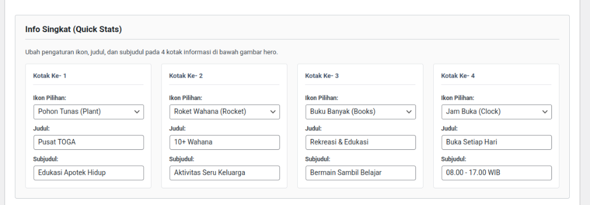C. Mengapa Kami? (Bento Grid)
Seksi berbentuk 3 kartu tidak simetris (bento). Anda harus mengisi Teks Label (Badge), Headline Utama, dan Deskripsi. Untuk setiap kartu, bebas pilih ikon khusus. Kartu Ke-1 (Kartu Utama) juga bisa diberi Background Image URL khusus.
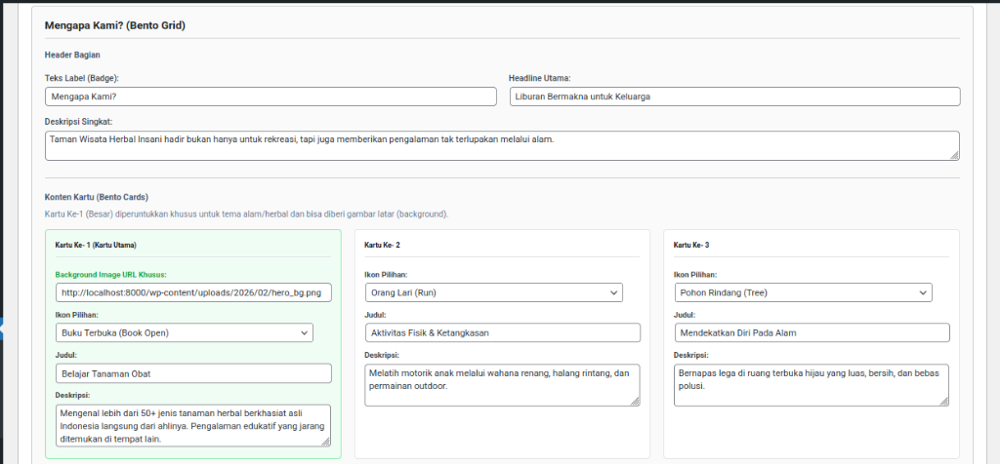D. Wahana & Aktivitas (Sorotan Artikel)
- Header & Tombol: Label Badge, Headline Utama, dan navigasi (Link ke halaman artikel penuh).
- Sumber Data Artikel: Anda bisa memilih tipe artikel "Postingan Terbaru" untuk ditampilkan secara otomatis pada grid depan.
E. Banner Promo Edukatif
Pengaturan blok banner promosi hijau menyala. Anda dapat mengatur Teks Promo, Link Tombol, serta Angka Diskon untuk "Stempel Stiker Bulat" bewarna kuning (contoh: "-20%").
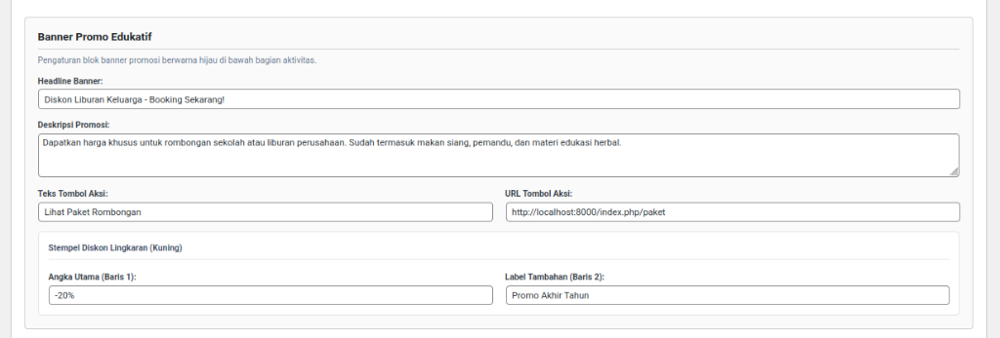F. Fasilitas Kenyamanan (Bisa Ditambah)
Atur blok daftar fasilitas yang ada di area promosi tiket atau halaman depan. Gunakan tombol + Tambah Fasilitas Baru untuk mengisi ikon, dan nama fasilitas (misal: "Musholla Luas" atau "Toilet Bersih"). Jika ingin menghapus, cukup klik tombol Hapus bewarna merah di ujung kanannya.
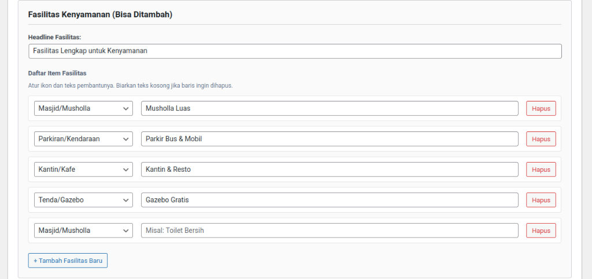G. Kata Mereka Tentang Kami (Testimoni)
Masukkan ulasan atau review pengunjung untuk meningkatkan kepercayaan. Anda bisa mengatur Rating Bintang (1-5), teks isi Testimoni, Nama Reviewer, dan Tipe/Jabatan mereka. Terdapat tombol Hapus merah untuk menghilangkan baris testimoni tertentu.
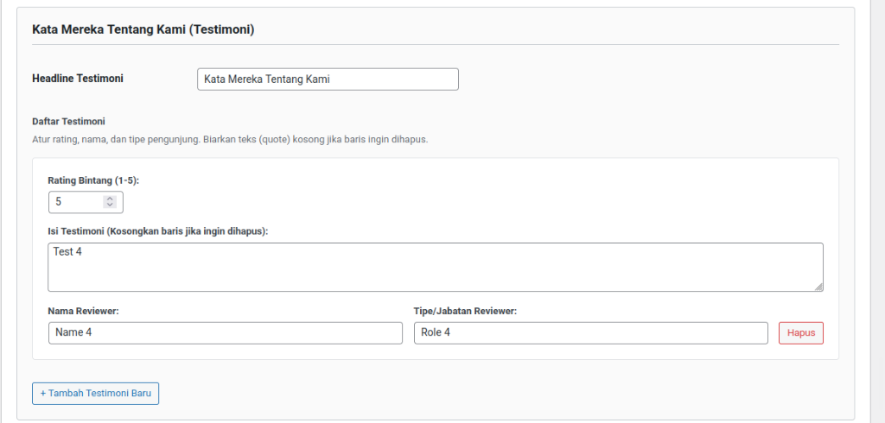3. Pengaturan Tentang Kami
Pada tab ini, Anda mengatur keseluruhan konten halaman yang menampilkan identitas dan profil Taman Wisata Herbal Insani.
Buat Laman (Page) baru dengan template Elementor Canvas (atau tema bawaan), lalu ketikkan shortcode
[herbal_tentang].
A. Hero Banner (Gambar Atas)
Atur gambar latar belakang (Background Image URL), teks label (Badge), Headline utama, dan deskripsi singkat. Biarkan URL gambar kosong jika ingin menggunakan gambar default.
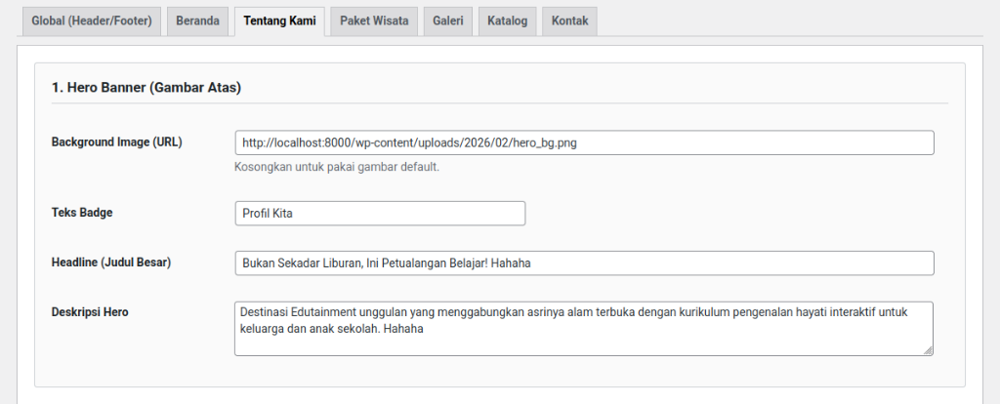B. Seksi Konsep (Kiri: Gambar, Kanan: Teks)
Isi narasi tentang konsep rekreasi edukatif. Anda perlu memasukkan URL Gambar dari Media Library, Badge Label, Judul H2, serta 2 paragraf penjelasan.
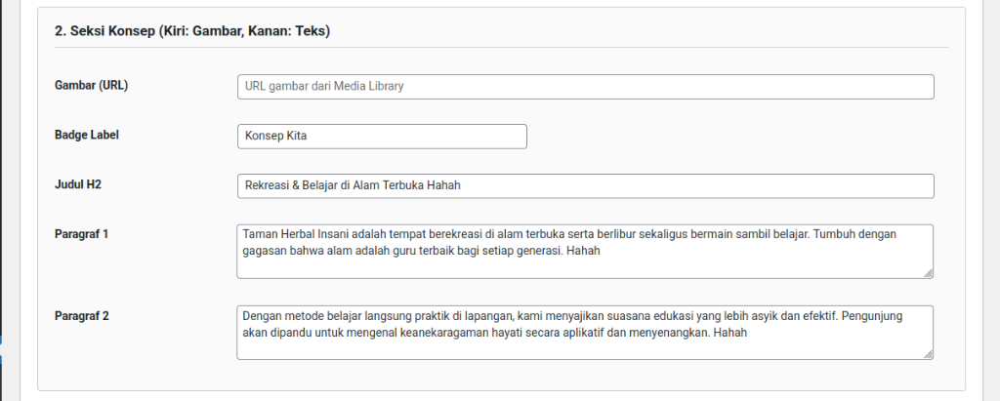C. Seksi Misi Edukasi (Kiri: Teks, Kanan: Gambar)
Seksi ini kebalikan dari seksi konsep. Anda bisa mengisi URL Gambar, Label, Judul, sebuah Paragraf penjelasan, dan juga Daftar Checklist Poin Edukasi menggunakan repeater khusus. Daftar edukasi tersebut akan otomatis ditampilkan dengan ikon centang di halaman web.
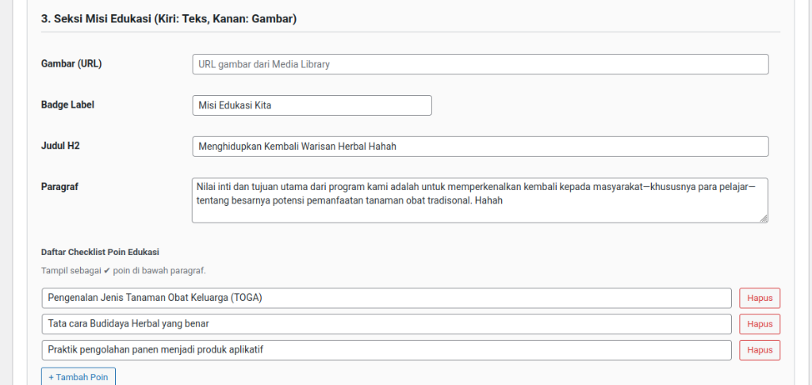D. Fasilitas & Wahana (2 Kolom)
Menjelaskan daftar fasilitas umum dan wahana eksklusif menggunakan sistem repeater terkompartemenisasi. Tambahkan data fasilitas berulang melalui tombol "+ Tambah" pada kolom "Akses Fasilitas Umum (Kartu Kiri, Terang)" dan "Wahana Eksklusif (Kartu Kanan, Gelap)".
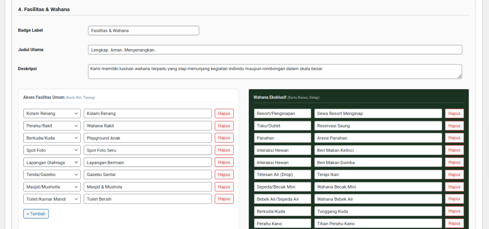E. Banner CTA Ajakan (Bawah Halaman)
Blok promosi dan ajakan reservasi di akhir halaman Tentang Kami. Lengkapi field Headline, Deskripsi singkat, Label Tombol, dan URL Destinasi (biasanya ke halaman /kontak atau /paket).
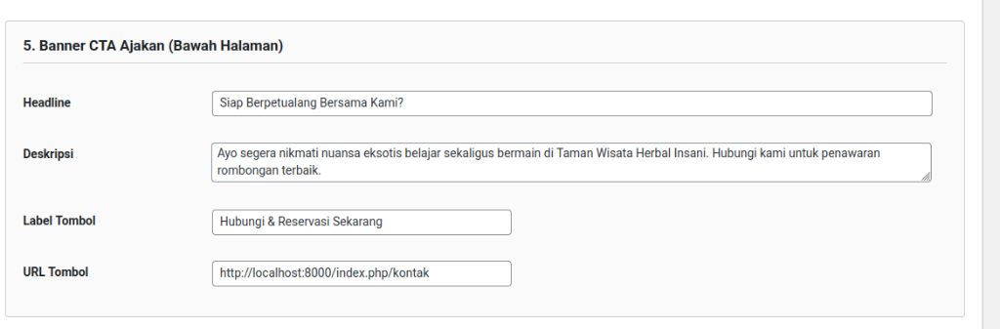4. Pengaturan Tab Paket Wisata
Pengaturan ini khusus untuk desain *header/banner* bagian atas pada halaman daftar Paket Wisata. Sedangkan untuk merekayasa *Daftar Paket/Tiketnya*, dikelola tersendiri melalui Sistem Menu CPT Paket Wisata.
Buat Laman (Page) baru dengan template Elementor Canvas, lalu ketikkan shortcode
[herbal_paket].
A. Hero Banner
Anda dapat mengatur Background Image URL, Headline (H1), dan Deskripsi Teks Pendek yang akan tampil tepat di bawah header halaman paket.
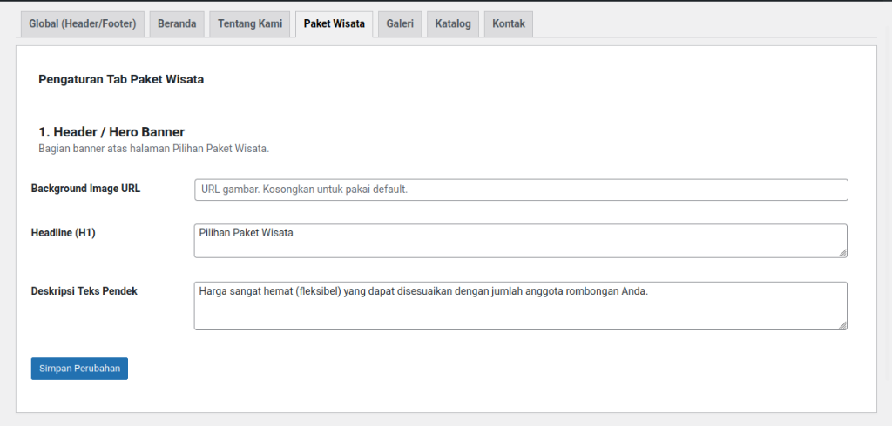5. Pengaturan Tab Galeri
Pada tab ini, Anda mengatur konten statis (header dan banner ajakan) pada halaman Galeri Foto.
Buat Laman (Page) baru dengan template Elementor Canvas, lalu ketikkan shortcode
[herbal_galeri].
A. Header / Hero Banner
Bagian atas halaman Galeri. Anda dapat mengatur Background Image (URL) (Kosongkan untuk mengambil default), Teks Badge (Kecil), Headline Utama (Warna Putih), Headline Baris 2 (Warna Aksen kuning), dan Deskripsi Pendek berisi teks perkenalan momen galeri.

B. Konten Galeri Foto
Info Penting: Foto-foto grid di halaman galeri dan data filter kategorinya diambil secara *otomatis* dari Submenu Galeri di navigasi kiri Taman Herbal. Silakan kelola di Menu Sistem CPT Galeri.
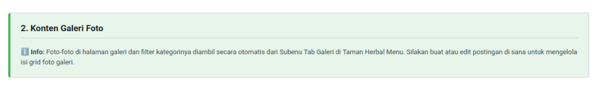C. Call To Action (Banner Bawah)
Blok promosi di area bawah Galeri. Atur Background Image (URL), susunan Headline H2 (Bisa menekan Enter untuk pindah baris teks), Deskripsi Pendek, dan isi kata-kata untuk Label Tombol beserta arah link tujuannya pada kolom URL Tombol.

6. Pengaturan Tab Katalog
Pada tab ini Anda dapat mengatur teks *Header Banner* untuk Halaman Katalog. Namun untuk mengelola daftar tanaman herbal utamanya, Anda harus mengisinya melalui Sistem Menu CPT Katalog Herbal.
Buat Laman (Page) baru dengan template Elementor Canvas, lalu ketikkan shortcode
[herbal_katalog].
1. Header / Hero Banner & Konten
Anda dapat mengatur Background Image (URL), Headline Utama (Contoh: "Ensiklopedia TOGA"), dan Deskripsi Pendek yang akan tampil tepat di bawah header halaman katalog.
Info Pencarian & Konten: Form pencarian di halaman frontend sudah terintegrasi dengan fungsi real-time Javascript filter secara otomatis, dan daftar tanaman di grid juga diambil dari Katalog Tanaman di sidebar navigasi. Anda tidak perlu mengaturnya secara manual di sini.
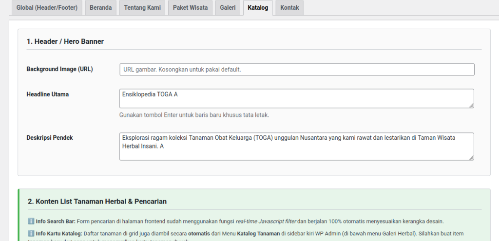7. Pengaturan Tab Kontak
Halaman ini merupakan tempat Anda mengatur seluruh rincian informasi dan *Call to Action* agar bisa dihubungi pengunjung, termasuk jalur komunikasi WhatsApp otomatis dan titik jemput *Google Maps*.
Buat Laman (Page) baru dengan template Elementor Canvas, lalu ketikkan shortcode
[herbal_kontak].
A. Hero (Gambar Atas)
Atur gambar spanduk *header*. Isikan Background Image (URL), Headline Utama (Contoh: "Hubungi Tim Kami"), dan Deskripsi sebagai kalimat pelengkap sambutan halaman Kontak.
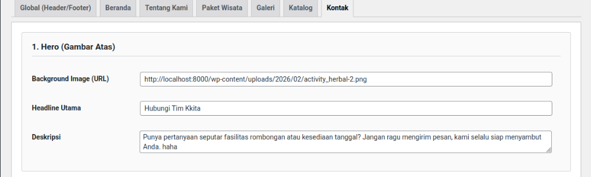B. Informasi Kontak (Kartu Kiri)
Menata daftar rute maupun kotak nomor pelayanan. Anda dapat menyusun judul kartu ("Informasi Kontak"), dan sub-deskripsinya. Di bawahnya terdapat Repeater Poin Kontak yang bisa ditambah berkali-kali menggunakan tombol biru + Tambah Poin.
- Ikon: Pilih ikon bawaan sistem seperti "Lokasi/Peta" atau "WhatsApp".
- Label Judul: Jenis kontak apa ini? (Contoh: "Alamat", "Reservasi").
- Isi / Nilai: Value dari informasinya (Format tulisan bebas/alamat jalan/kombinasi nomor).
*Catatan: Tombol Sosial Media di kartu panel kiri akan diambil otomatis dari pengaturan Tab Global → Sosial Media. Anda tidak perlu menduplikat pengaturannya di sini.
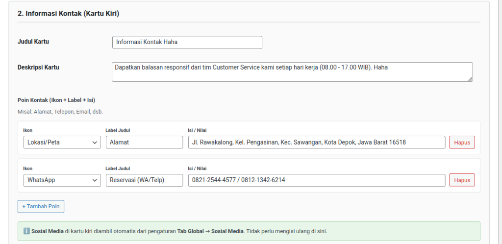C. Form Pesan → Direct ke WhatsApp (Kartu Kanan)
Di sebelah kanan halaman, terdapat fitur Form Pertanyaan pintar. Saat pengunjung menekan tombol *Kirim*, website otomatis mengemas isian pesannya melempar ke aplikasi WhatsApp Admin. Terdapat fitur Dropdown Pilihan Opsi Topik, misal:
- Nomor WA Tujuan: Wajib diisi (Format pakai "62" atau "08"). Ini adalah nomor Customer Service penerima form dari website.
- Template Pesan WA: Tulislah format baku (contoh: Halo Admin! ...). Gunakan *placeholder* tag khusus:
{nama}untuk nama depan pengunjung,{topik}untuk *Dropdown* yang mereka pilih, dan{pesan}untuk tambahan rincian pesannya. - Opsi Pilihan (Dropdown di Form): Buat opsi yang siap dipilih oleh pelanggan lewat tombol Repeater Biru. Misal "Booking Paket", "Booking Rombongan", dsb.
D. Peta Lokasi (Maps)
Paling bawah halaman kotak. Atur kolom *Badge Label*, *Headline*, Deskripsi ajakan jalan. Bagian terpenting adalah menyalin alamat iframe Google Maps Embed di kolom URL Embed Maps.
Perhatian Penting: Anda hanya diizinkan mengambil "Teks URL panjang di dalam attribute src=..." pada kode Iframe Google! Jangan *paste* blok Iframe-nya bulat-bulat.
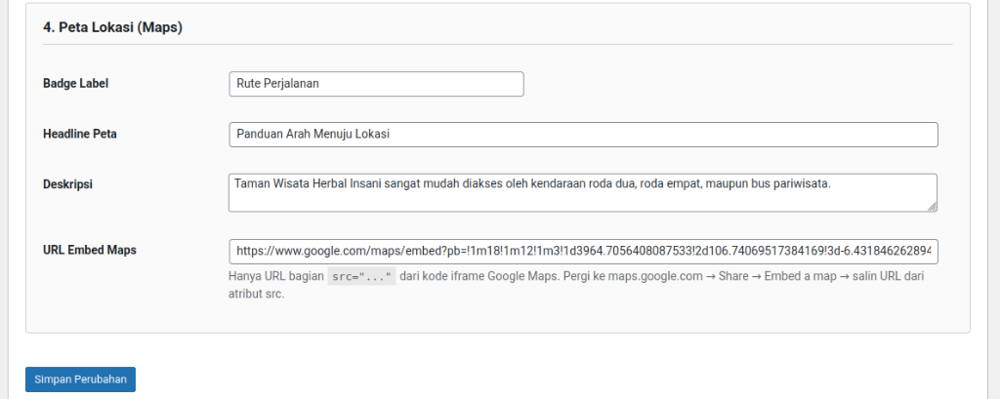Panduan Ekstra: Cara Mendapatkan URL Embed Google Maps
- Buka laman Google Maps dari Browser dan cari lokasi bisnis Anda.
- Pada panel kiri yang muncul, tekan ikon/tombol Bagikan (Share).
- Dari *pop-up* Bagikan yang muncul, klik tab menu Sematkan Peta (Embed a map).
- Anda akan melihat form kode panjang berawalan
<iframe src="https://www.google.com/...">. - Pilih dan Copy (Ctrl+C) spesifik hanya isi dari teks url panjang yang diapit tanda kutip
src="..."-nya saja! Atau, Anda bisa mencetak teksnya di Notepad/Word dulu, baru ambil bagian *link url* nya saja.
Terakhir, Paste (Ctrl+V) tautan tersebut ke dalam kolom URL Embed Maps di pengaturan Theme Options Kontak website Anda.
Mengelola Data Paket Wisata (CPT)
Berbeda dengan teks header halamannya yang diatur di Theme Options Paket Wisata, isi/daftar tiket paketnya (seperti Sewa Resort, Masuk Perorangan, dll) harus diinput satu per satu melalui menu CPT (Custom Post Type) khusus.
Anda dapat menemukan dan mengelola seluruh tiket/paket di navigasi panel kiri WordPress pada menu: Taman Herbal > Paket Wisata.
Cara Input Informasi Paket yang Benar
Di sidebar admin WordPress, pilih menu Taman Herbal > Paket > Tambah Baru. Pertama, isi Judul Paket di bagian paling atas. Kemudian *scroll* ke bawah untuk mengisi form data paket (Metabox) dan atribut di sisi kanannya.
1. Pengelompokkan Tab (Kategori Paket) & Atribut Pos
Penting untuk struktur kartu dan tatanan kelompok di depan halaman.
- Judul Atas (Tambahkan Judul): Nama wajib paket wisata Anda (contoh: "Tiket Masuk Perorangan"). Akan menjadi identitas utama kartu saat diklik/Share.
- Kategori / Nama Tab: Ketikkan Kategori (misal "Sewa Resort"), atau klik tombol pintasan layar. Paket dengan kategori yang sama akan tergabung ke dalam 1 Tab yang sama di depan.
- Ikon Tab: Sesuai nama ikon (misal
ph-users). Cukup klik tombol pintasan list Ikon atau klik (Cari Ikon) untuk ikon Phosphor lain. - Gaya Desain Kartu: Pilih dari total 3 variasi desain yang disediakan (Contoh: "Standard", "Gambar Kiri Menyatu", dsb.) sesuai kebutuhan konten promosinya.
- Atribut Pos (Kanan Layar): Pada panel samping kanan terdapat kotak Atribut Pos > Urutan. Isi dengan angka (contoh 0, 1, 2) untuk menentukan urutan kartu paket di dalam satu Tab. Angka terkecil tampil paling pertama.
2. Detail Identitas Kartu
Mengatur variabel teks dan angka seperti tag label, harga, dan satuan pada kartu. Gambar Unggulan (Featured Image) di-setel dari sidebar kanan bawah WordPress (Ukuran wajib 1200x800px).
- Label/Badge Paket: Muncul kecil di pojok kiri atas (Mendukung pintasan Promo yang otomatis dikonversi jadi stiker kuning).
- Info Tambahan: Biasa diisi "Minimal 30 Orang" (Tampil di bawah Judul tiket).
- Harga Dasar: HARUS isikan Angka Saja (contoh: 350000). Titik desimal otomatis diformat.
- Satuan Waktu/Orang: Label sufiks di sebelah harga (contoh: / Orang, / Malam).
3. Fasilitas Kiri
Sebelah kiri biasanya memuat daftar detail fasilitas apa saja yang sudah *include/termasuk* ke dalam harga tiket.
- Judul Kolom Kiri: (Default = "Fasilitas:").
- Daftar Fasilitas: Tekan "Enter" pada setiap poin baru. Daftar di sini akan otomatis berubah jadi ber-ikon centang hijau di halaman depan.
- HTML Ekstra: Teks opsional menggunakan panduan gaya HTML tambahan.
4. Fasilitas Kanan & Tombol Aksi
Sedangkan sebelah kanan memuat pengaturan ekstra gaya kolom dan juga URL aksi ke reservasi.
- Gaya Kolom Kanan: Anda bisa merubah gayanya jadi "Check-List Biasa", "Kotak Pesan" (Untuk memberi *Warning Info* kotak), dll.
- Judul & Konten Kanan: Judul opsional bisa diisi "Catatan:" dsb. Tekan enter per barisnya.
- Teks Tombol Aksi: Tombol hijau di paling bawah desain kartu. Biarkan kosong untuk label *default*.
- Link URL Tombol (Penting): Mendukung otomatisasi *Smart Icon* berdasarkan isi URL-nya (3 kondisi)!
- Dikosongkan: Otomatis mengarah ke halaman
/kontakwebsite Anda dan memunculkan Ikon Kontak pada tombol. - Diisi link
wa.me/..: Otomatis mendeteksi nomor WhatsApp dan memunculkan Ikon logo WhatsApp. - Diisi link URL eksternal lainnya: Otomatis memunculkan logo Ikon Tautan URL generik.
- Dikosongkan: Otomatis mengarah ke halaman
Atribut: Mengubah Urutan Paket (Sorting)
Jika posisi urutan paket wisata kurang pas, Anda dapat mengelolanya dari halaman daftar semua paket:
- Buka menu daftar WordPress: Taman Herbal > Paket.
- Arahkan kursor mouse ke judul paket yang ingin diubah posisinya, klik tulisan Edit Cepat (Quick Edit).
- Di sebelah kanan, ubah angka pada kolom Urutan (Order). Pada contoh di bawah, Paket nomor '1' atau '2' otomatis mendahului paket nomor '8' dsb. Klik tombol Perbarui (Update).
- Dari tabel list yang muncul, Anda juga bisa mengklik nama Kolom Tabel "Kategori Tab" atau "Urutan" untuk melalukan Group Sorting warna tab layaknya di Microsoft Excel.
Mengelola Katalog Herbal (CPT)
Berbeda dengan teks header halamannya yang diatur di Theme Options Katalog, daftar koleksi tanaman dikelola melalui menu CPT khusus.
Untuk menambah daftar Tumbuhan/Herbal, silakan buka menu list navigasi di kiri layar WordPress: Katalog Tanaman. Klik menu Katalog Tanaman > Tambah Baru.
Cara Input Koleksi Tanaman
1. Judul, Konten Editor, dan Gambar Andalan
- Judul Atas (Tambahkan judul): Isi nama umum Tanaman (Contoh: "Jahe Merah", "Brotowali").
- Editor Deskripsi (Tengah Kotak Besar): Ceritakan sejarah, ciri fisik, atau klasifikasi umumnya panjang lebar. Anda dapat menggunakan styling *Heading* atau list sesuai kebutuhan.
- Gambar andalan (Kanan Bawah): Klik *Tetapkan gambar unggulan* (Thumbnail) untuk memilih foto utama yang tampil di kartu Web Katalog.
2. Informasi Ekstra Tanaman
Meta box "Informasi Ekstra Tanaman" berfungsi mengelola variabel di dalam Kartu Grid (*Bento Layout*) yang nampak di depan halaman.
- Kategori / Badge: Muncul sebagai tag kecil di atas judul kartu grid katalog (Misal: "Terna", "Rimpang", "Daun").
- Nama Latin Tanaman: Penamaan latin saintik, misal: "Zingiber officinale var. rubrum".
- Waktu Baca (Menit): Estimasi durasi baca dalam format Angka Saja (Contoh: "2" atau "4").
- Daftar Poin Khasiat / Manfaat: Poin yang akan tayang dengan ikon *Check* berurutan dari atas ke bawah. Tersedia 3 slot kolom (*Poin Khasiat 1 - 3*). Sebaiknya Anda mengisi ketiganya secara merata agar seluruh ukuran kartu Katalog terlihat proporsional memanjang ke bawah.
Mengelola Tab Galeri Foto (CPT)
Menu ini digunakan untuk membuat grup kategori Tab beserta kumpulan daftar foto Grid di dalamnya. Grid otomatis tersambung ke Halaman Galeri. Diakses melalui navigasi kiri WordPress Taman Herbal > Galeri.
Cara Konfigurasi (Input Foto)
Berbeda dengan CPT lain, sistem Galeri cukup unik. Setiap 1 (Satu) Pos / Artikel Galeri yang Anda buat akan diterjemahkan menjadi 1 (Satu) Kategori Tab interaktif di halaman depan pengujung.
- Judul Atas (Tambahkan Judul): Teks ini akan menjadi identitas nama "Tombol Switch/Navigasi Filter" di atas Grid Gambar Galeri (Contoh: ketik "Keseruan Outbound").
- List Daftar Foto dalam Tab Ini: Kotak *Metabox* besar di tengah ini adalah tempat mengunggah rentetan album fotonya. Tekan tombol panjang "+ Tambah Foto Baru" yang ada di bawah untuk menambah kolom *Repeater*. Setiap kotaknya minta diisi:
- Pilih Gambar: Tombol biru untuk mengambil/mencari foto dari Media Library WordPress Anda.
- Judul Foto: Teks keterangan yang akan muncul besar (dengan kotak kuning) saat pengunjung meng-klik / memperbesar gambar.
- Deskripsi Singkat: Teks panjang (paragraf) untuk menerangkan kegiatan foto tersebut, letaknya ada di bawah judul saat mode *Zoom/Lightbox*.
- Pengaturan Ikon Tab (Sisi Kanan): Panel kanan atas, yaitu kolom "Class Icon Phosphor". Berfungsi memunculkan lambang/ikon sebelum teks Tab kategorinya (contoh:
ph-image,ph-users-three). Kosongkan jika tidak mau pakai Ikon.